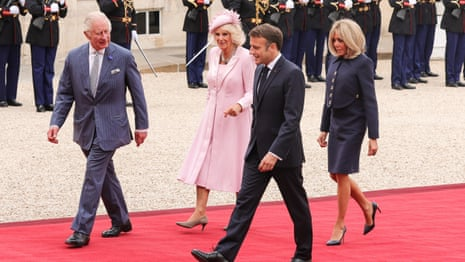

When Emmanuel Macron rides in a horse-drawn carriage to Windsor Castle this week, it will be to celebrate the return of close political relations between London and Paris, drawing a line under the damaging spats of the Brexit years .
The French president’s office said the “shared interests” of the two countries were what mattered now, hailing France and the UK’s “essential” close relationship on the international stage. This reinvigorated cross-Channel bond was “vital”, a UK official said.
For Paris, it is symbolic that Macron is the first European leader to be invited for a pomp-filled state visit to the UK since Brexit. It is seen as a sign of the special France-UK relationship that Macron beat the US president, Donald Trump, to be hosted by King Charles. Trump is expected to take his turn in a gilded carriage later this year.
The strong Franco-British unity on display is seen as crucial at a time of war in Ukraine and the Middle East and faced with the unpredictability of the US president. London and Paris’s close bilateral ties on security and defence continued unhindered by Brexit , but are expected to be deepened and updated at Downing Street’s Franco-British summit this week, as the two countries lead the “coalition of the willing” on Ukraine.
For France, Macron’s state visit underlines how far Labour’s Keir Starmer has gone to move on from the nightmare chapter in cross-Channel relations of the Brexit years. Boris Johnson, who used his best franglais to say Paris should “donnez-moi un break” , was seen by French officials as a populist engaged in constant France-bashing to numb the electorate to the impact of Brexit. Trust and dialogue had ebbed away during bitter rows over submarine contracts with Australia and fishing rights. The short-lived PM Liz Truss had deliberately refused to say whether Macron was a friend or a foe while running for the Conservative leadership.
Relations began to thaw under Rishi Sunak, assisted by King Charles’s state visit to France in 2023 . The king dined at the Palace of Versailles, saying he loved Édith Piaf songs because the French cabaret star had sung to his mother on a state visit when she was pregnant with him.
King Charles and Queen Camilla enter French presidential palace with President Macron – video
Macron and Starmer see each other unusually often. The UK prime minister has travelled to France five times since his election, with Macron travelling several times in the other direction, as they work together on Ukraine.
“The geopolitical landscape has changed and made it more compelling for both sides to make up,” said Sébastien Maillard, a special adviser to the Jacques Delors Institute. “At a time of tremendous, almost earth-shattering movements in the international order, it’s a way for of both countries – who are permanent members of the UN security council, have nuclear deterrents and the same level of diplomatic and military outreach – to cling to an order based on international law.”
Maillard said France and the UK’s renewed relationship, and putting Brexit aside, sent a signal to the Kremlin and the White House that they were like-minded and “there is no ideological warfare between them … that core values and principles are deeply shared, and they are closely tied when it comes to defending Ukraine and the continent, and upgrading their military capabilities while increasing defence spending”.
But a difficult issue remains on the table: the catastrophic deaths of would-be asylum seekers trying to reach the UK coast on small boats across the Channel from France. Despite joint British funding and cooperation, and French police presence on the coast, nearly 20,000 people have arrived in Britain via small boats so far this year, a 50% increase on the same period in 2024. At least 17 people died this year trying to cross the Channel by boat, after a record 78 died last year. France is considering allowing police to stop British-bound boats in its shallow coastal waters up to 300 metres from the coast, but this requires a legal decision from sea authorities. Announcements are expected at this week’s summit.
“Both governments have to approach this as a domestic political issue, which makes the situation even more complex,” said Christian Lequesne, a professor of international relations at Paris’s Sciences Po university. He said Starmer and Macron were in their own ways both under pressure at home from an increase in far-right and anti-immigration political discourse from Marine Le Pen and Nigel Farage.
Lequesne said that ultimately the newly warmed relationship better equipped the countries to find solutions: “It took a long time, but France has finally digested Brexit, which it had a hard time swallowing and was disappointed about.”